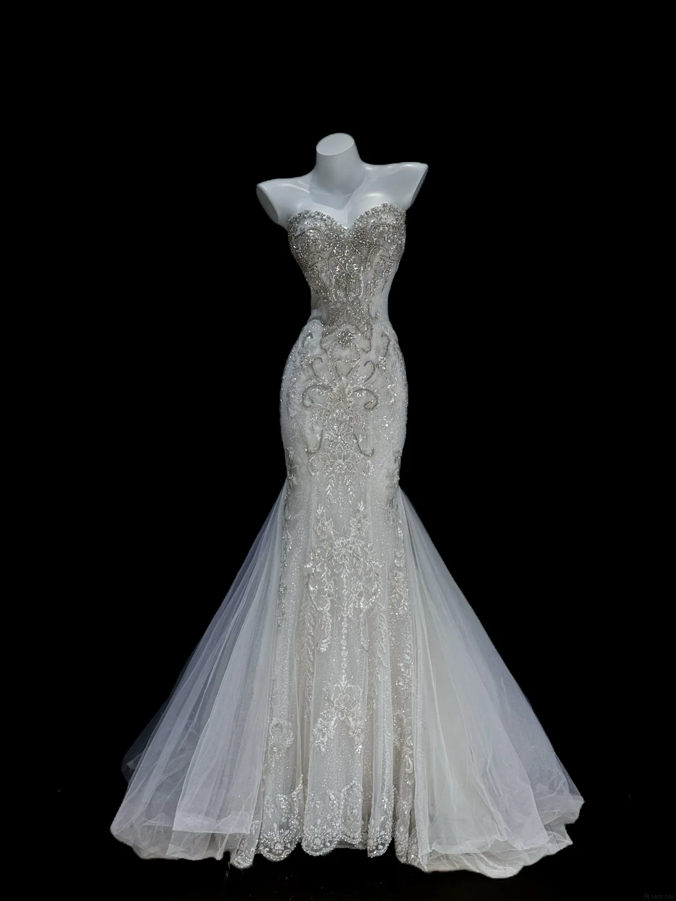

Crystal Filigree · Sculpted Couture
Lunar
Sovereign
A sculpted mermaid silhouette glimmers like moonlight on still water. Silver filigree and hand-set crystals trace the corseted bodice before dissolving into a translucent tulle train—an exacting study in brilliance, restraint and ceremonial drama.
Crystal filigree · Hand beading · Layered tulle